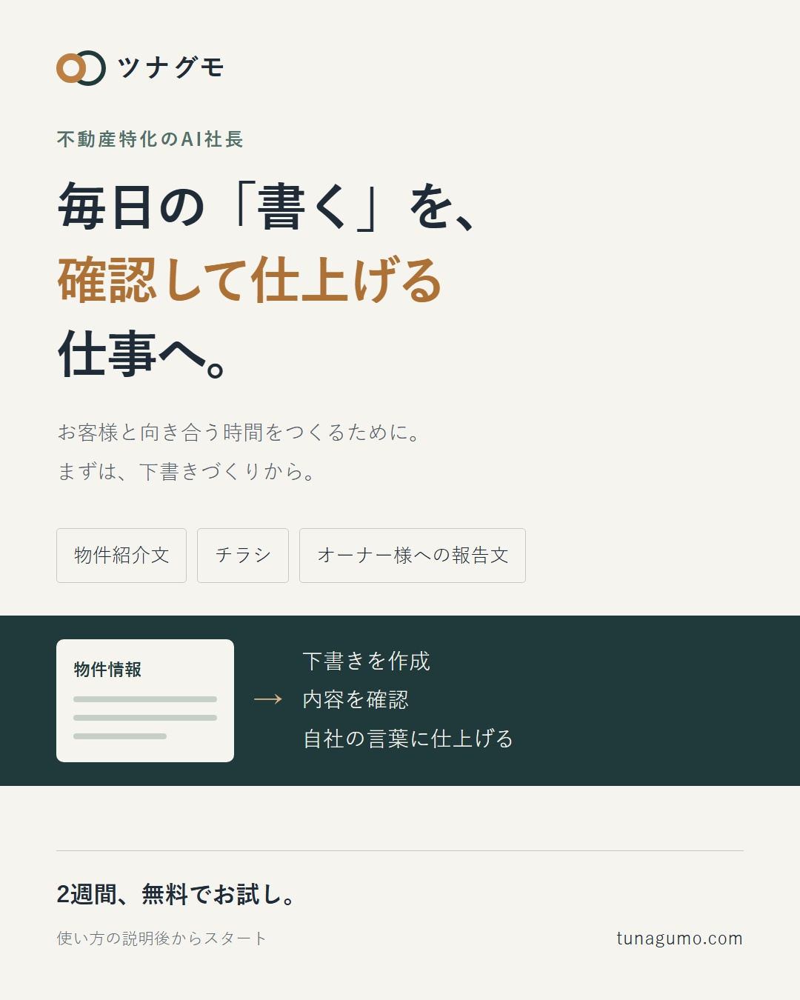
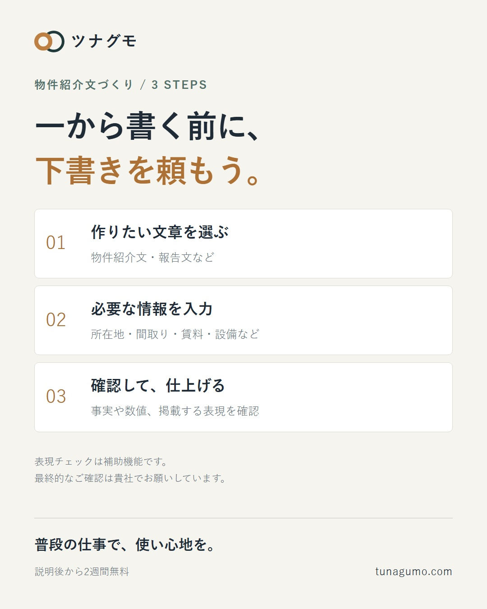
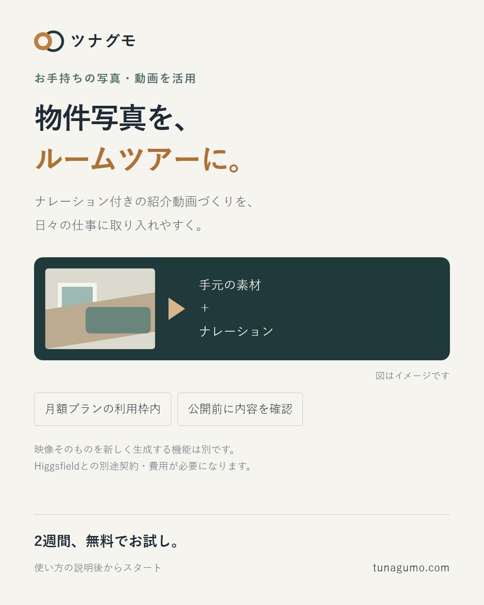

01｜不動産の書く仕事を、任せられる仕事へ
物件紹介文、チラシ、オーナー様への報告文。 毎回ゼロから書く仕事を、確認して仕上げる仕事へ。 不動産特化のAI社長「ツナグモ」。 使い方の説明後から2週間無料で試せます。 https://tunagumo.com/trial
X 10件・Instagram 3件。すべて未承認・未投稿です。
推奨順：Xは番号順に1日1〜2件、Instagramは週2〜3件。LINEの一斉配信は別途対象と内容を確認します。
物件紹介文、チラシ、オーナー様への報告文。 毎回ゼロから書く仕事を、確認して仕上げる仕事へ。 不動産特化のAI社長「ツナグモ」。 使い方の説明後から2週間無料で試せます。 https://tunagumo.com/trial
物件紹介文は、書き始めるまでがひと苦労。 ツナグモなら、所在地・間取り・賃料などを入力して下書きを作成。 金額や設備を確認し、自社の言葉に整えてから使えます。 #不動産 #物件紹介文
夜間・休日に届く問い合わせ。 朝まで何も返せない状態を減らしたい。 ツナグモは、連携したWebチャット・LINE・メールで一次返信を補助します。 個別の判断やその後の対応は担当者へ。 ※窓口ごとの設定が必要です。
物件ページの情報を、紹介文へ転記する手間。 ツナグモでは、物件ページのURLから情報を取り込み、下書きづくりに使えます。 読み取れないページもあるため、取込結果と元の情報を確認してから作成します。 #不動産
オーナー様への報告。 数字を集めたあと、文章にするところで手が止まる。 ツナグモでは、入力した情報から報告文の下書きを作れます。 事実や数値を確認し、伝えたい事情を加えて仕上げてください。 #賃貸管理 #不動産
物件の特徴は分かっているのに、チラシの形にする時間がない。 ツナグモは、物件情報を使ったチラシづくりにも対応。 生成後は文字・金額・写真を確認してからご利用ください。 https://tunagumo.com #不動産
物件写真を、紹介動画にも使いたい。 ツナグモでは、お手持ちの写真・動画からナレーション付きのルームツアーを作れます。 公開前に、映像と説明が物件情報に合っているか確認してください。 #不動産 #ルームツアー
ツナグモの動画機能は2種類。 ・手元の写真や動画からルームツアーを作る：月額の利用枠内 ・映像そのものを新しく生成する：Higgsfieldの別途契約・費用が必要 料金の詳細はこちら。 https://tunagumo.com/pricing
紹介文を書いたあと、表現の確認も忘れずに。 ツナグモは、違反しやすい表現の検出を補助します。 ※検出は補助機能です。最終的なご確認は貴社でお願いしています。 #不動産 #物件紹介文
ツナグモを試すなら、まずは毎日くり返す仕事をひとつ。 物件紹介文や報告文など、普段の作業で使い心地を確かめてください。 LINEで使い方の説明を予約 → 説明後から2週間無料。 https://tunagumo.com/trial

物件紹介文、チラシ、オーナー様への報告文。 一から書く時間を、確認して仕上げる時間へ。 不動産特化のAI社長「ツナグモ」は、物件情報や依頼内容から下書きづくりをサポートします。 生成された文章・画像は、事実や金額、表現を確認してからご利用ください。 月39,800円〜。文章・画像・手元の素材から作るルームツアー動画のAI利用料は、プランの利用枠に含まれます。映像そのものを新しく生成する機能は、Higgsfieldとの別途契約・費用が必要です。 LINEで使い方の説明をご予約いただき、説明後から2週間無料で試せます。 プロフィールのリンクから → https://tunagumo.com/trial #不動産 #不動産会社 #物件紹介文 #業務効率化 #ツナグモ

物件紹介文、毎回ゼロから書いていませんか。 ① 作りたい文章を選ぶ ② 所在地・間取り・賃料などを入力する ③ 下書きの内容を確認して仕上げる ツナグモでは、物件ページのURL取込も利用できます。読み取れないページもあるため、取込後は元の情報と照合してください。 文章を作成したら、金額・面積・設備などの事実と、掲載する表現を確認します。 表現チェックは補助機能です。最終的なご確認は貴社でお願いしています。 使い方の説明後から2週間無料。 https://tunagumo.com/trial #不動産 #物件紹介文 #賃貸管理 #業務効率化 #ツナグモ

内見前に物件の雰囲気を伝えたい。 でも、動画編集に時間をかけにくい。 ツナグモでは、お手持ちの写真・動画からナレーション付きのルームツアーを作成できます。公開前に、映像の順序やナレーション、物件情報との一致を確認してください。 この機能は月額プランの利用枠内で使えます。 映像そのものを新しく作る生成機能とは別で、そちらはHiggsfieldとの契約・費用が必要です。 使い方の説明後から2週間無料でお試しいただけます。 https://tunagumo.com/trial #不動産 #ルームツアー #物件動画 #物件紹介 #ツナグモ